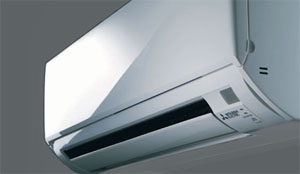
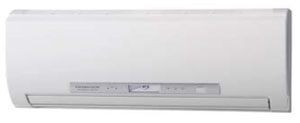
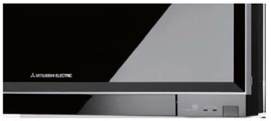

Кондиционеры Mitsubishi Electric
| Высочайшее качество продукции Mitsubishi Electric само является ее рекламой. Однако когда промышленные технологии и стандарты с легкостью меняют корпоративную прописку в глобальном масштабе, минимальный уровень брака перестает быть конкурентным преимуществом, превращаясь в условия выживания на рынке. Кондиционеры Mitsubishi Electric создают идеальную атмосферу в офисах, магазинах, гостиницах и ресторанах. Всем известно, если атмосфера комфортна, то покупатели наслаждаются покупками, служащие легче концентрируют внимание, совещания проходят удачнее, а обеденные перерывы способствуют расслаблению. |
 |
Кондиционеры Mitsubishi Electric серия Deluxe R410A
MSZ-FD25VA, MSZ-FD35VA, MSZ-FD50VA
|  | Кондиционеры Mitsubishi Electric серии Deluxe гармонично сочетают в себе высокую энергоэффективность и бесшумную работу. Встроенные у кондиционеров функция зонального контроля температуры поверхности пола (I SEE) и двойной плазменной очистки воздуха (PLASMA DUO) повышают уровень комфорта в помещении. Инверторные кондиционеры Mitsubishi Electric серии Deluxe MSZ-FD разработаны специально для внутреннего рынка Японии и одновременно стали поставляться в страны Европы. Особое внимание при разработке этой серии японских кондиционеров уделялось равномерному обогреву и охлаждению комнаты. Наличие датчика I SEE позволяет избежать холодной зоны у пола (например, у поверхности пола в детской комнате). Его использование создает максимальный комфорт в помещении, а также снижает потребление электроэнергии |
Система очистки воздуха Dual Plasma позволяет эффективно избавиться от неприятных запахов, пыли и аллергенов. Активный фильтр «двойная плазма» Dual Plasma : улавливает мельчайшие частицы из воздуха, устраняет запахи, разлагает формальдегиды, выделяемый мебелью.
- Рекордно высокий уровень энергоэффективности позволяет использовать инверторный кондиционер круглые сутки, максимально экономя электроэнергию.
- Низкий уровень шума — 20 дБ(А).
- Легкоразборный корпус внутреннего блока кондиционера для удобства обслуживания.
- Значительные возможности по длине магистрали хладагента и перепаду высот.
- Установка на старую фреонотрассу: при замене старых сплит систем с хладагентом R22 на данные кондиционеры Mitsubishi Electric серии Deluxe MSZ-FD не требуется замена или промывка магистралей.
Кондиционеры Mitsubishi Electric серия Design R410A
MSZ-EF22VE(B/S/W), MSZ-EF25VE(B/S/W), MSZ-EF35VE(B/S/W), MSZ-EF42VE(B/S/W), MSZ-EF50VE(B/S/W)
B - черный, S - серебристый, W – белый
| Кондиционеры Mitsubishi Electric серии Design созданы по запросу итальянского отделения Mitsubishi Electric , где дизайн внутреннего блока кондиционера является необходимым условием успеха на климатическом рынке. Яркий и стильный дизайн, высокая эффективность энергопотребления и низкий уровень шума, оставляет серию Design MSZ-EF лидером в классе японские кондиционеры. Новый пульт дистанционного управления кондиционером оснащен недельным таймером, который позволяет задавать до 4 операций работы кондиционера в течение каждого дня. Улучшенная система жалюзи формирует оптимальную форму и скорость воздушного потока при различных режимах работы кондиционера." border="0"> |  |
Встроенный недельный таймер. Таймер позволяет задавать до 4 операций работы кондиционера в течение дня: включение и выключение кондиционера, а также изменение целевой температуры.
Наноплатиновый фильтр. В волокна фильтра встроены платино-керамические частицы нанометрового диапазона, благодаря которым фильтр осуществляет антибактериальную и антивирусную обработку воздуха, а также уничтожает запахи. По эффективности обработки и очистки воздуха, наноплатиновый фильтр превосходит катехиновый. Поверхность фильтра увеличена за счет того, что сетка не является плоской, а имеет объемную форму. Благодаря этому, в кондиционере Mitsubishi Electric серии Design MSZ-EF значительно увеличена эффективность фильтрации воздушного потока, проходящего через внутренний блок.
Низкий уровень шума. В моделях серии Design MSZ-EF предусмотрен дополнительный сверхтихий режим работы вентилятора «Silent Mode». Минимальный уровень шума сплит системы Mitsubishi Electric составляет всего 21 дБ(А), что является идеальным решением для кондиционирования спальни или детской комнаты.
Кондиционеры Mitsubishi Electric серия Standard R410A
MSZ-GE22VA, MSZ-GE25VA, MSZ-GE35VA, MSZ-GE42VA, MSZ-GE50VA
- Низкий уровень шума инверторного кондиционера — 19 дБ(А) (для сплит-систем MSZ-GE22/25/35VA ) и высокая энергоэффективность.
- Новый беспроводный пульт SG10A со встроенным недельным таймером (для сплит-систем MSZ-GE60/71VA).
- Разборный корпус внутреннего блока кондиционера для удобства обслуживания.
- Установка на старую фреонотрассу: при замене старых сплит систем с хладагентом R22 на данные кондиционеры Mitsubishi Electric серии Standard MSZ-GE не требуется замена или промывка магистралей.
- Кондиционер комплектуется ИК-пультом дистанционного управления. Установка кондиционера может производиться с подключением настенного проводного пульта управления — PAR-21/30MAA. Соединение осуществляется с помощью дополнительного адаптера MAC-397IF.
- Система фильтрации воздуха: полноразмерный антиоксидантный фильтр снижает концентрацию свободных радикалов в воздухе. Этот же фильтр эффективно уничтожает болезнетворные бактерии и вирусы: вирус гриппа и т. д. Антиоксидантный фильтр имеет срок службы 9 лет. Предусмотрена дополнительная установка в кондиционер антиаллергенной фильтрующей вставки (опция).
- Наличие у сплит-системы режима ≪I save≫ позволяет организовать экономичное дежурное отопление — минимальная температура в помещении может составлять +10 °С .
Класс энергоэффективности «А». Кондиционеры Mitsubishi Electric серии Standard MSZ-GE имеют высокую энергетическую эффективность и относятся к высшей категории «А» по европейской классификации.
Наноплатиновый фильтр. В волокна фильтра встроены платино-керамические частицы нанометрового диапазона, благодаря которым фильтр осуществляет антибактериальную и антивирусную обработку воздуха, а также уничтожает запахи. По эффективности обработки и очистки воздуха, наноплатиновый фильтр превосходит катехиновый. Поверхность фильтра увеличена за счет того, что сетка не является плоской, а имеет объемную форму. Благодаря этому, в кондиционере Mitsubishi Electric серии Standard MSZ-GE значительно увеличена эффективность фильтрации воздушного потока, проходящего через внутренний блок.
Низкий уровень шума. В моделях серии Standard MSZ- GE предусмотрен дополнительный сверхтихий режим работы вентилятора «Silent Mode». Минимальный уровень шума сплит системы Mitsubishi Electric составляет всего 19 дБ(А), что является идеальным решением для кондиционирования спальни или детской комнаты.
Стильный дизайн и компактная конструкция. Элегантный внешний вид, качественные материалы и высокая точность изготовления характеризуют сплит системы Mitsubishi Electric серии Standard MSZ-GE как японские кондиционеры. Эргономичная конструкция корпуса и ярко-белый цвет пластика внутреннего блока кондиционера позволяют сплит системам серии Standard MSZ-GE гармонично сочетаться с любым интерьером.
Внутренние блоки для мультисплит-систем Mitsubishi Electric серия Standard R410A
MSZ-SF15VA, MSZ-SF20VA
Внутренние блоки небольшой производительности по охлаждению MSZ-SF15VA, MSZ-SF20VA предназначены для применения только в мультисплит-системах на базе наружных блоков MXZ-2С/3С/4С/5С/6С/8B.
- Низкий уровень шума кондиционера — 19 дБ(А) и высокая энергоэффективность.
- Современный эргономичный дизайн внутреннего блока.
- Небольшие габаритные размеры: внутренние блоки MSZ-SF15VA, MSZ-SF20VA меньше, чем блоки серии MSZ-GE22VA.
- Новый беспроводный пульт дистанционного управления со встроенным недельным таймером.
- Две направляющих воздушного потока с независимым приводом (два электродвигателя).
- Наличие у моделей MSZ-SF15VA, MSZ-SF20VA режима ≪I save≫ позволяет организовать экономичное дежурное отопление — минимальная температура в помещении может составлять +10 °С .
Встроенный недельный таймер. Таймер позволяет задавать до 4 операций работы кондиционера в течение дня: включение и выключение кондиционера, а также изменение целевой температуры.
Две направляющие воздушного потока с независимым приводом. Заявка на патент. В кондиционере, верхняя и нижняя направляющие воздушного потока оснащены отдельными электродвигателями. Независимые направляющие воздушного потока позволяют создать более комфортную циркуляцию воздуха в помещении. В режиме охлаждения направляющие дополняют друг друга, увеличивая площадь обдува. При этом две заслонки работают как одна большая, создавая горизонтальный поток. В режиме обогрева направляющие устанавливаются таким образом, что выходное отверстие внутреннего блока кондиционера сужается. За счет уменьшения выходного отверстия скорость потока теплого воздуха увеличивается, направляясь в нижнюю часть помещения.
Кондиционеры Mitsubishi Electric серия Classic R410A
MSZ-HC25VA, MSZ-HC35VA
Сплит системы Mitsubishi Electric серии Classic — это инверторные кондинционеры доступного качества. Инверторные технологии, низкое энергопотребление и отсутствие пусковых токов, а также не высокий уровень шума, все это укладывается в приемлемую цену кондиционера Mitsubishi Electric серии Classic . Если нет необходимости в расширенных функциях, а также специальных требований к дизайну внутреннего блока, серия Classic Inverter станет оптимальным выбором.
- Энергоэффективность сплит системы - класс «А».
- Функция экономичного охлаждения «Econo Cool» .
- Встроенный 12-ти часовой таймер автоматического включения или выключения сплит-системы. Дискретность установки таймера составляет 1 час.
- Автоматическое возобновление работы кондиционера после сбоя электропитания (авторестарт).